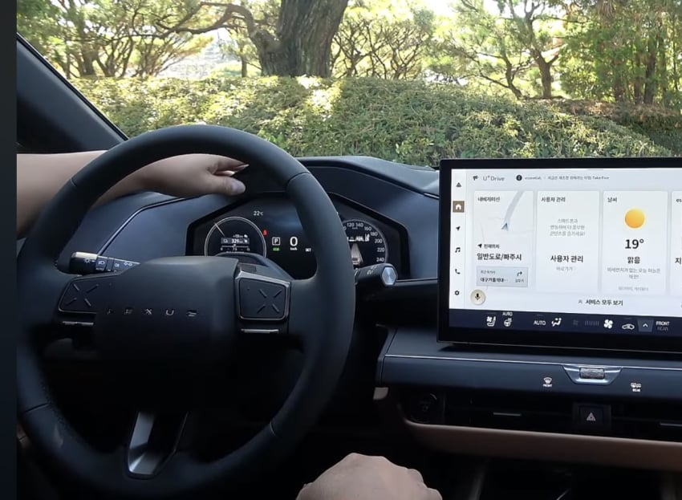
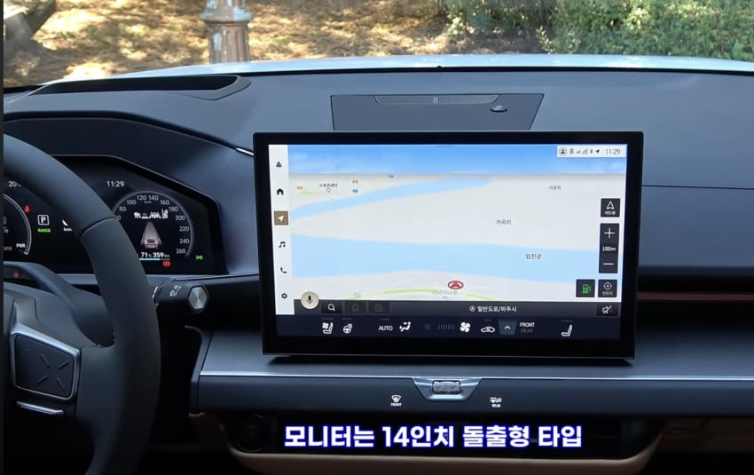
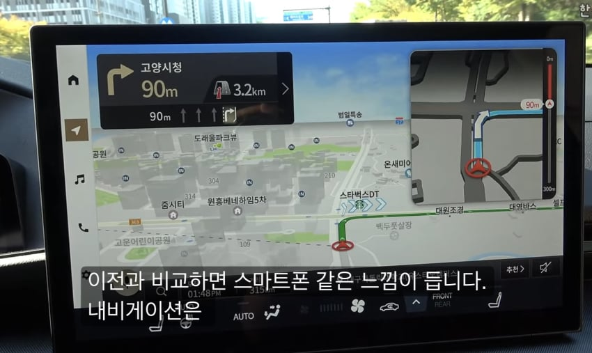
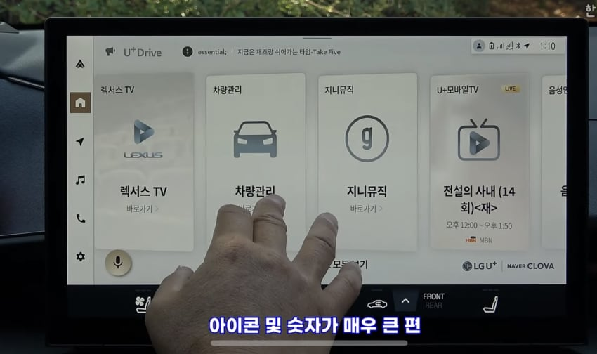
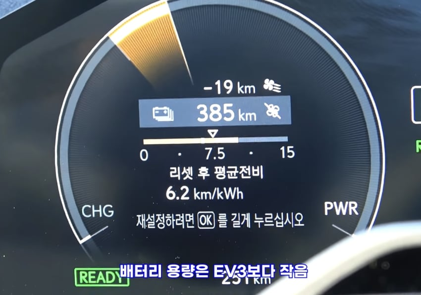
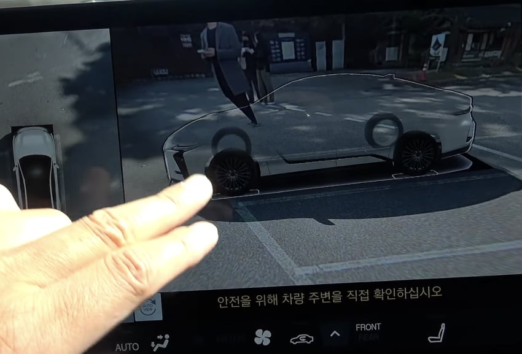
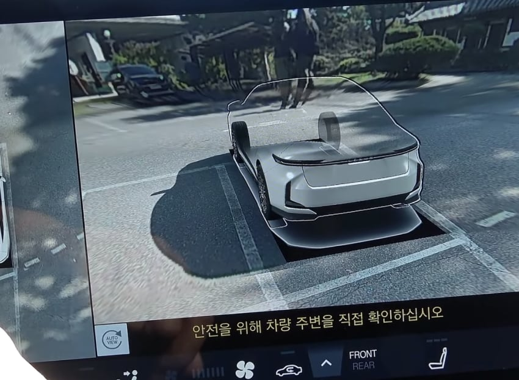
렉서스 ES 2026년식 ㅋㅋ
틀딱들 전용차여서
네비게이션 폰트도 존나크고
서라운드뷰 꼬라지 ㅋㅋㅋ
주변사람들 진격의거인으로 ㅋㅋㅋㅋㅋ
초딩이 만드는 수준임 ㅋㅋ
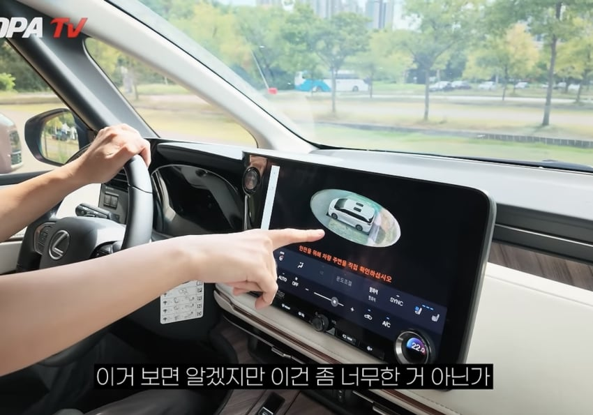
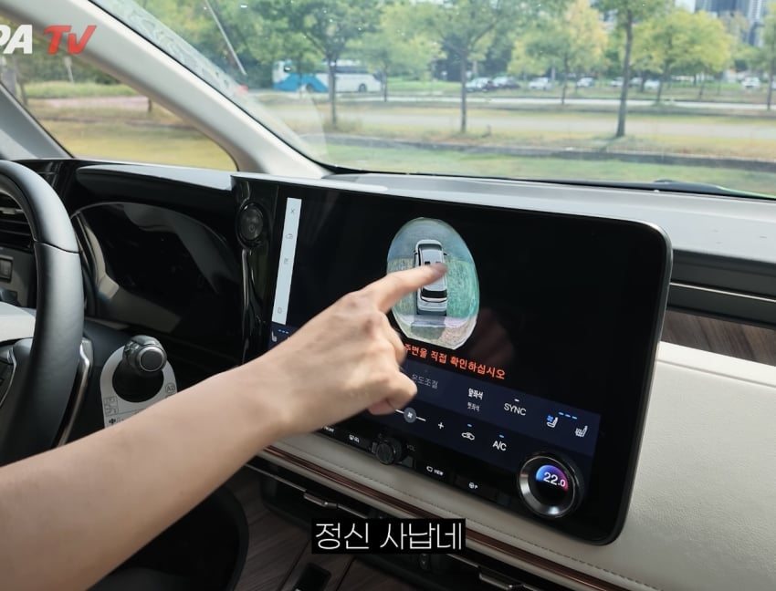
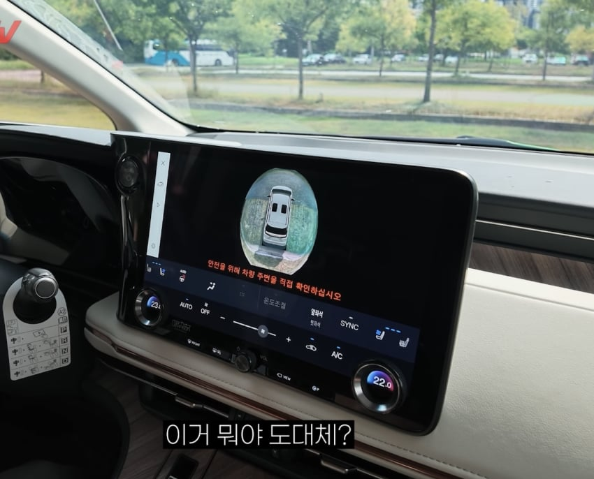
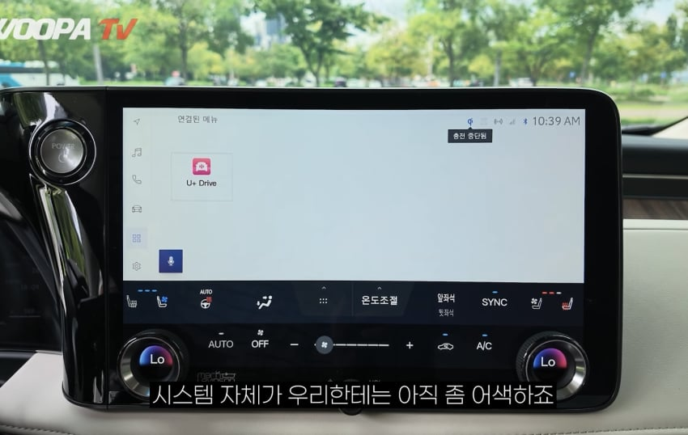


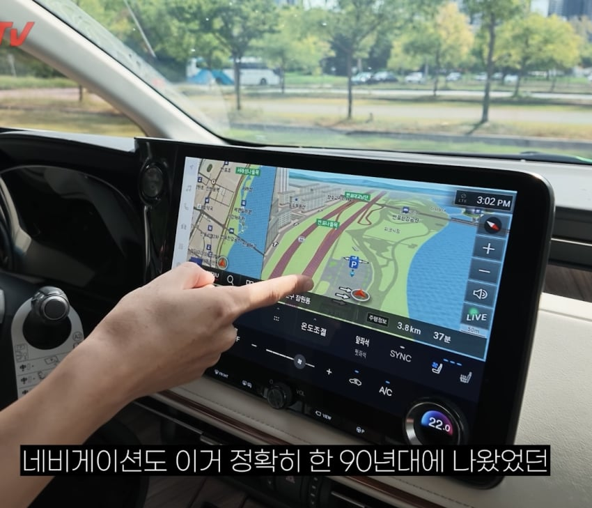

렉서스 LM 2026년식
서라운드뷰.네비게이션 꼬라지 ㅋㅋ
캐스퍼보다 구림 ㅋㅋㅋㅋㅋ

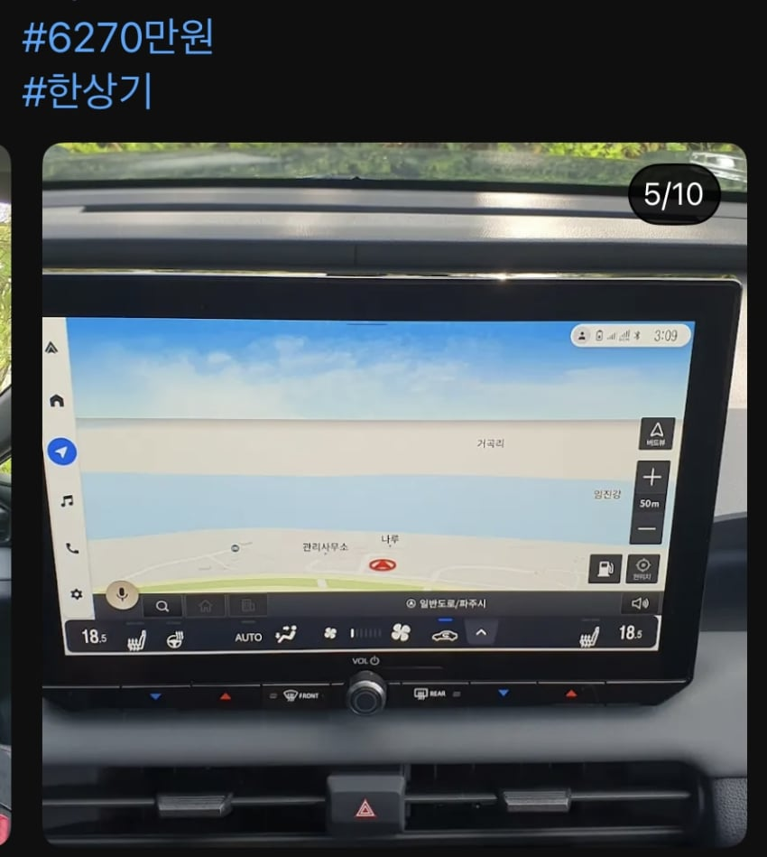
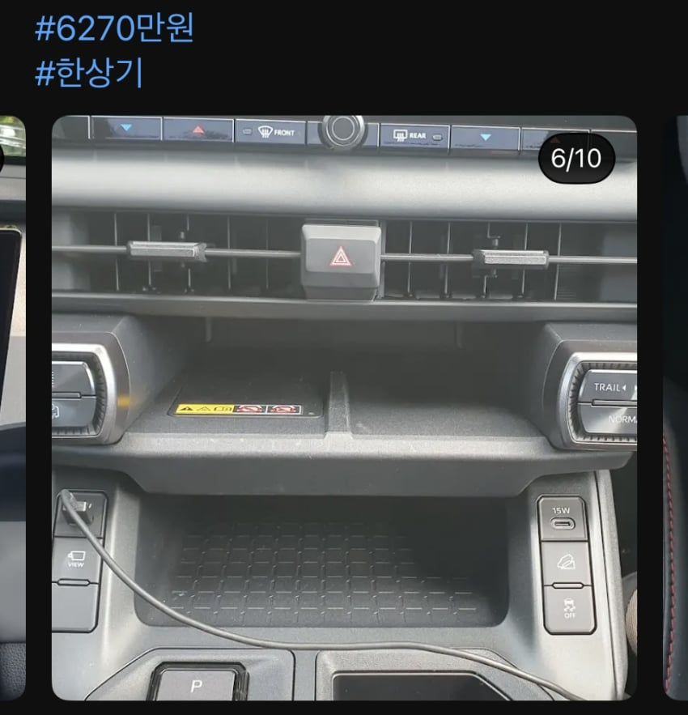
라브4 신형 2026년식
네비게이션.실내꼬라지 ㅋㅋㅋㅋㅋ
포터보다 썩었음 ㅋㅋㅋㅋ
저러면서 플레오스가 어쩌고 저쩌고 ㅋㅋㅋ
댓글
수집 당시 댓글 207개
· ㅇㅇ · 11.13 04:02:49
· ㅇㅇ · 11.13 10:26:22
ㅇㅇ · 11.12 22:43:37
ㅇㅇ · 11.12 22:49:25
· dd · 11.12 22:50:21
삭제됨 · 11.12 22:51:09
· dd · 11.12 22:51:48
· dd · 11.12 22:53:10
· ㅇㅇ · 11.13 10:43:13
삭제됨 · 11.12 22:51:44
· ㅇㅇ · 11.12 23:01:16
ㅇㅇ · 11.12 22:59:10
ㅇㅇ · 11.12 23:05:06
호날두 · 11.12 23:05:15
ㅇㅇ · 11.12 23:10:14
ㅇㅇ · 11.12 23:11:07
· ㅇㅇ · 11.13 14:03:25
ㅇㅇ · 11.12 23:14:08
· ㅇㅇ · 11.12 23:34:30
· ㅇㅇ · 11.12 23:35:55
· ㅇㅇ · 11.12 23:36:54
· ㅇㅇ · 11.12 23:38:40
· ㅇㅇ · 11.13 04:14:51
· ㅇㅇ · 11.13 06:54:44
· ㅇㅇ · 11.13 08:38:24
· ㅇㅇ · 11.13 10:58:40
· ㅇㅇ · 11.13 13:20:20
· ㅇㅇ · 11.13 14:04:06
· ㅇㅇ · 11.13 16:38:56
· 아음속 · 11.13 16:40:48
· ㅇㅇ · 11.13 16:51:01
· ㅇㅇ · 11.13 16:57:20
필기구 · 11.12 23:15:32
ㅇㅇ · 11.12 23:18:25
· ㅇㅇ · 11.12 23:20:17
· ㅇㅇ · 11.12 23:21:33
· ㅇㅇ · 11.13 08:39:01
원또 · 11.12 23:24:19
ㅇㅇ · 11.12 23:34:01
ㅇㅇ · 11.12 23:35:42
ㅇㅇ · 11.12 23:43:43
· ㅇㅇ · 11.12 23:45:03
· ㅇㅇ · 11.12 23:49:57
· 차갤러 · 11.13 00:22:55
· ㅇㄴ · 11.13 06:20:11
· Honsound · 11.13 08:29:46
· ㅇㅇ · 11.13 16:42:04
NEO_Blue · 11.12 23:51:51
ㅇㅇ · 11.12 23:53:35
ㅇㅇ · 11.12 23:53:43
· 차갤러 · 11.13 00:23:31
· ㅇㅇ · 11.13 04:08:14
· 빈민가일본차 · 11.13 05:45:21
· ㅇㅇ · 11.13 07:04:12
ㅇㅇ · 11.13 00:02:28
· 차갤러 · 11.13 00:24:44
· ㅇㅇ · 11.13 03:27:01
· 빈민가일본차 · 11.13 05:45:05
· ㅇㅇ · 11.13 07:03:22
· ㅇㅇ · 11.13 13:57:38
ㅇㅇ · 11.13 00:18:10
ㅇㅇ · 11.13 00:20:16
환란 전 교회 휴거 · 11.13 00:32:38
치주물류 · 11.13 00:33:08
오대성 · 11.13 01:10:04
· ㅇㅇ · 11.13 07:22:19
· ㅇㅇ · 11.13 15:04:39
· 아음속 · 11.13 16:44:02
ㅇㅇ · 11.13 01:19:52
· ㅇㅇ · 11.13 14:15:52
ㅇㅇ · 11.13 01:27:30
ㅇㅇ · 11.13 02:51:48
ㅇㅇㅇㅇㅇㅇ · 11.13 03:06:24
ㅇㅇ · 11.13 03:19:25
ㅇㅇ · 11.13 05:06:43
ㅇㅇ · 11.13 05:06:46
ㅇㅇ · 11.13 06:57:08
ㅇㅇ · 11.13 08:12:30
· ㅇㅇ · 11.13 13:30:41
· ㅇㅇ · 11.13 16:19:58
ㅇㅇ · 11.13 08:28:21
ㅇㅇ · 11.13 09:37:33
ㅇㅇ · 11.13 09:38:38
ㅇㅇ · 11.13 10:01:02
ㅇㅇ · 11.13 10:27:11
ㅇㅇ · 11.13 10:45:08
· ㅇㅇ · 11.13 14:18:32
· ㅇㅇ · 11.13 15:09:11
· ㅇㅇ · 11.13 15:10:32
ㅇㅇ · 11.13 10:56:29
hawaii50 · 11.13 10:59:26
· ㅇㅇ · 11.13 15:07:36
ㅇㅇ · 11.13 11:49:11
· ㅇㅇ · 11.13 14:20:09
· 아음속 · 11.13 16:46:08
ㅇㅇ · 11.13 12:38:58
ㅇㅇ · 11.13 13:29:58
ㅇㅇ · 11.13 13:56:59
· 아음속 · 11.13 16:46:55
아음속 · 11.13 16:39:48
· 차갤러 · 11.12 05:45:17
차갤러 · 11.12 03:51:18
ㅇㅇ · 11.12 04:12:35
ㅇㅇ · 11.12 05:41:42
ㅇㅇ · 11.12 06:43:59
ㅇㅇ · 11.12 06:44:07
ㅇㅇ · 11.12 08:13:06
차갤러1 · 11.12 08:36:26
ㅇㅇ · 11.12 09:06:59
· ㅇㅇ · 11.12 22:27:09
차갤러 · 11.12 09:08:14
차갤러2 · 11.12 10:32:23
ㅇㅇ · 11.12 11:23:56
안갤러 · 11.12 12:24:49
ㅇㅇ · 11.12 13:35:14
· ㅇㅇ · 11.12 17:37:22
차갤러3 · 11.12 15:55:48
차갤러4 · 11.12 22:17:49
ㅇㅇ · 11.12 22:21:57
ㅇㅇ · 11.12 22:23:12
· ㅇㅇ · 11.12 22:28:19
ㅇㅇ · 11.12 22:24:06
ㅇㅇ · 11.12 22:24:57
ㅇㅇ · 11.12 22:26:29
ㅇㅇ · 11.12 22:26:56
· ㅇㅇ · 11.12 22:27:21
· ㅇㅇ · 11.13 16:44:49
ㅇㅇ · 11.12 22:27:09
ㅇㅇ · 11.12 22:27:46
ㅇㅇㅇ · 11.12 22:28:11
· dd · 11.12 22:42:09
· ㅇㅇㅇ · 11.12 22:43:05
· 한국은아시아의미국 · 11.12 23:14:42
· 차갤러 · 11.13 00:21:08
· 차갤러 · 11.13 00:26:04
ㅇㅇ · 11.12 22:28:12
ㅇㅇ · 11.12 22:28:21
· ㅇㅇ · 11.12 22:35:52
· dd · 11.12 22:40:52
· ㅇㅇ · 11.13 07:07:39
ㅇㅇ · 11.12 22:29:15
· dd · 11.12 22:38:34
· 차갤러 · 11.13 00:21:24
일본박사샨테- · 11.12 22:31:00
· ㅇㅇ · 11.12 22:34:12
· 일본박사샨테- · 11.12 22:35:02
· 프븨 · 11.12 23:11:03
· ㅇㅇ · 11.13 07:09:11
ㅇㅇ · 11.12 22:31:35
· ㅇㅇ · 11.12 22:31:56
ㅇㅇ · 11.12 22:32:25
· ㅇㅇ · 11.13 03:35:46
ㅇㅇ · 11.12 22:33:44
· ㅇㅇ · 11.12 22:34:45
· dd · 11.12 22:35:53
· ㅇㅇ · 11.12 22:36:51
· dd · 11.12 22:39:14
· ㅇㅇ · 11.12 22:41:31
· dd · 11.12 22:44:18
· ㅇㅇ · 11.12 22:44:35
· ㅇㅇ · 11.12 22:45:27
· dd · 11.12 22:45:57
· ㅇㅇ · 11.12 22:46:08
· dd · 11.12 22:46:21
· dd · 11.12 22:46:39
· ㅇㅇ · 11.12 22:46:40
· dd · 11.12 22:47:15
· dd · 11.12 22:47:31
· ㅇㅇ · 11.12 22:47:59
· dd · 11.12 22:48:03
· dd · 11.12 22:48:15
· dd · 11.12 22:48:27
· ㅇㅇ · 11.12 22:48:45
· ㅇㅇ · 11.12 22:49:06
· dd · 11.12 22:50:05
· 삼전평단58000 · 11.12 22:51:15
· ㅇㅇ · 11.12 22:52:28
· ㅇㅇ · 11.12 22:54:10
· dd · 11.12 22:54:41
· ㅇㅇ · 11.12 22:55:26
· dd · 11.12 22:55:53
· dd · 11.12 22:56:17
· ㅇㅇ · 11.12 22:56:57
· ㅇㅇ · 11.12 22:57:44
· ㅇㅇ · 11.12 23:01:12
· ㅇㅇ · 11.12 23:04:14
· ㅇㅇ · 11.12 23:52:45
· ㅇㅇ · 11.13 05:35:18
ㅇㅇ · 11.12 22:34:19
dd · 11.12 22:34:21
ㅇㅇ · 11.12 22:38:33
· dd · 11.12 22:51:36
· ㅇㅇ · 11.13 07:05:54
ㅇㅇ · 11.12 22:40:04
· dd · 11.12 22:51:04
· ㅇㅇ · 11.13 07:05:33
ㅇㅇ · 11.12 22:41:38
· dd · 11.12 22:50:51
· ㅇㅇ · 11.12 22:54:45
· ㅇㅇ · 11.13 04:01:58
ㅇㅇ · 11.12 03:45:09
· -앱테크-모음집 · 11.12 19:07:26
ㅇㅇ · 11.12 03:45:33
차갤러 · 11.12 03:47:31
· 차갤러 · 11.12 05:45:08
· dd · 11.12 22:34:00
빈민가일본차 · 11.12 03:49:42